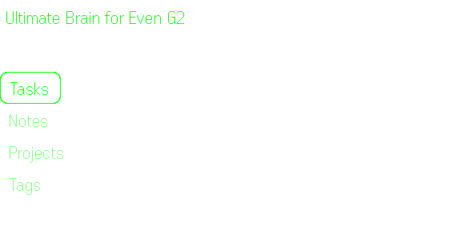
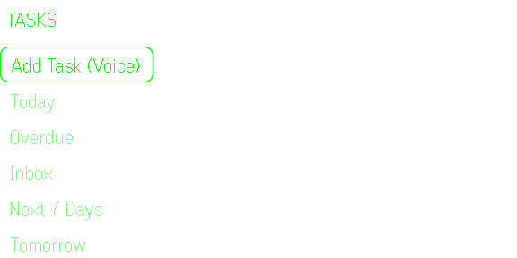
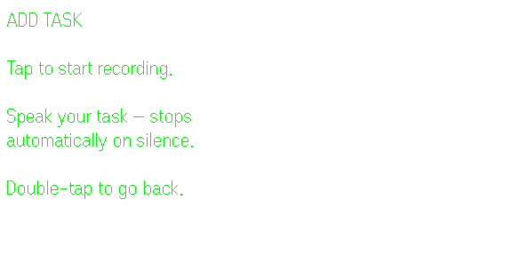
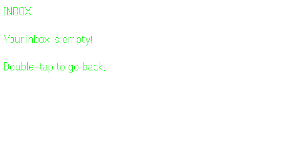
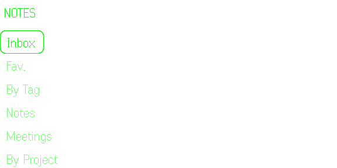
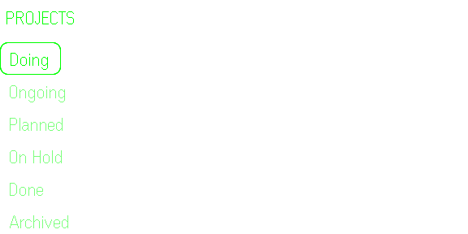
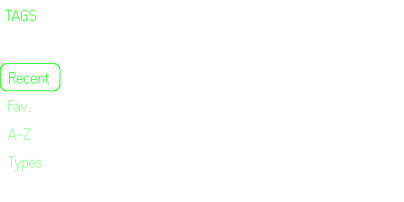
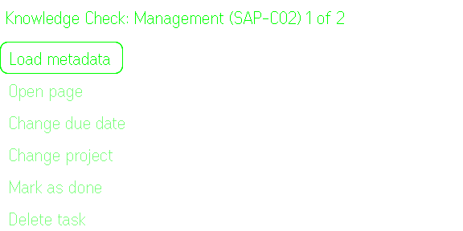
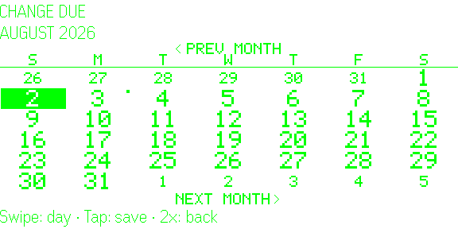
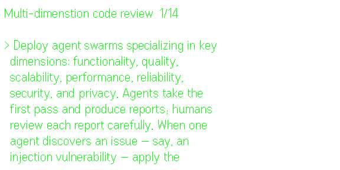

Thomas Frank's
Ultimate Brain Notion
Template, on your glasses.











Tasks
See your todos right on your face
Work your Inbox, Today, Tomorrow, and
Next 7 days views without touching your phone. Open a task's
action menu to reschedule, reassign
its project, mark it done, or delete it.
Notes,
projects & tags
Browse everything, organized.
Notes, Projects, and Tags by every view in the Notion template. Drill into
any
of them to see what's filed underneath, then act on an item right
from its menu.
Voice
capture
Capture a task, hands-free.
Dictate a new task offline, on-device,
confirm the transcript, and send it straight to your Notion Inbox. No phone, no app
switching, no losing the thought before you can write it down.
Page
reader
Read the page contents, on-screen.
A task's or note's page renders as pre-paginated
screenfuls of text, navigated with swipes.
Your
data
Your Notion, your rules.
The Notion API blocks requests from app webviews—how Even hosts the phone interface. This
app uses a stateless proxy: your Notion token and data are sent
directly to Notion's API and never stored on our servers. That's why no sign-up is needed.
Open
source
Free, and yours to run.
The glasses app is free, even though running
the server has costs. If you want to avoid other people's
servers knowing your Notion token, feel free to clone and deploy on your own server. If you have
no technical
experience, you can use Claude Code or Copilot for it.